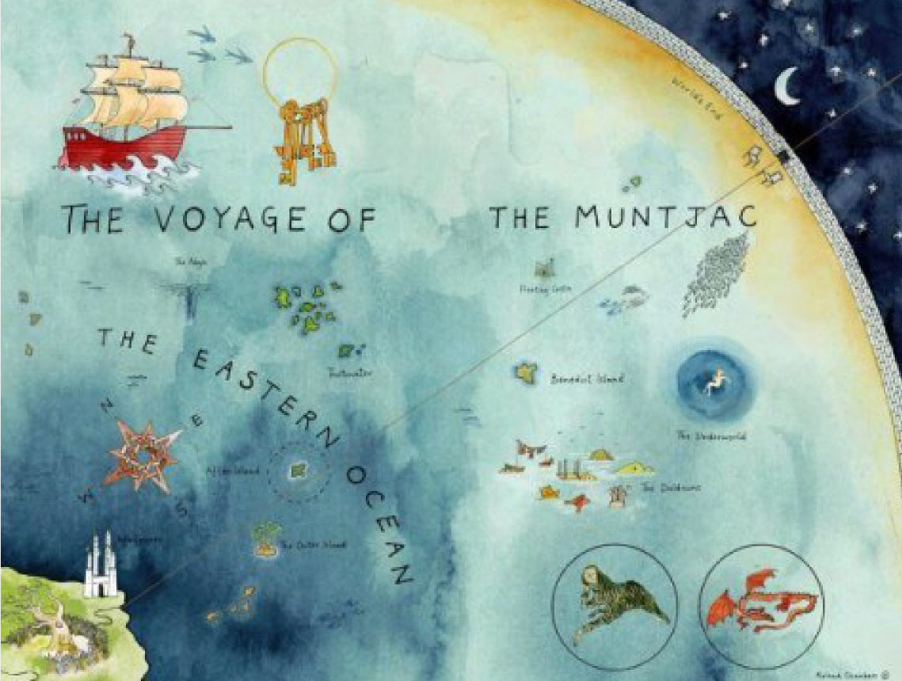

Listening
Reading
You should spend about 20 minutes on Questions 1-13, which are based on Reading Passage 1 below.
One feels a certain sympathy for Captain James Cook on the day in 1778 that he "discovered" Hawaii. Then on his third expedition to the Pacific, the British navigator had explored scores of islands across the breadth of the sea, from lush New Zealand to the lonely wastes of Easter Island. This latest voyage had taken him thousands of miles north from the Society Islands to an archipelago so remote that even the old Polynesians back on Tahiti knew nothing about it. Imagine Cook's surprise, then, when the natives of Hawaii came paddling out in their canoes and greeted him in a familiar tongue, one he had heard on virtually every mote of inhabited land he had visited. Marveling at the ubiquity of this Pacific language and culture, he later wondered in his journal: "How shall we account for this Nation spreading it self so far over this Vast ocean?"
Answers have been slow in coming. But now a startling archaeological find on the island of Efate, in the Pacific nation of Vanuatu, has revealed an ancient seafaring people, the distant ancestors of today's Polynesians, taking their first steps into the unknown. The discoveries there have also opened a window into the shadowy world of those early voyagers. At the same time, other pieces of this human puzzle are turning up in unlikely places. Climate data gleaned from slow-growing corals around the Pacific and from sediments in alpine lakes in South America may help explain how, more than a thousand years later, a second wave of seafarers beat their way across the entire Pacific.
"What we have is a first- or second-generation site containing the graves of some of the Pacific's first explorers," says Spriggs, professor of archaeology at the Australian National University and co-leader of an international team excavating the site. It came to light only by luck. A backhoe operator, digging up topsoil on the grounds of a derelict coconut plantation, scraped open a grave - the first of dozens in a burial ground some 3,000 years old. It is the oldest cemetery ever found in the Pacific islands, and it harbors the bones of an ancient people archaeologists call the Lapita, a label that derives from a beach in New Caledonia where a landmark cache of their pottery was found in the 1950s. They were daring blue-water adventurers who roved the sea not just as explorers but also as pioneers, bringing along everything they would need to build new lives - their families and livestock, taro seedlings and stone tools.
Within the span of a few centuries the Lapita stretched the boundaries of their world from the jungle-clad volcanoes of Papua New Guinea to the loneliest coral outliers of Tonga, at least 2,000 miles eastward in the Pacific. Along the way they explored millions of square miles of unknown sea, discovering and colonizing scores of tropical islands never before seen by human eyes: Vanuatu, New Caledonia, Fiji, Samoa.
What little is known or surmised about them has been pieced together from fragments of pottery, animal bones, obsidian flakes, and such oblique sources as comparative linguistics and geochemistry. Although their voyages can be traced back to the northern islands of Papua New Guinea, their language - variants of which are still spoken across the Pacific - came from Taiwan. And their peculiar style of pottery decoration, created by pressing a carved stamp into the clay, probably had its roots in the northern Philippines. With the discovery of the Lapita cemetery on Efate, the volume of data available to researchers has expanded dramatically. The bones of at least 62 individuals have been uncovered so far - including old men, young women, even babies - and more skeletons are known to be in the ground. Archaeologists were also thrilled to discover six complete Lapita pots; before this, only four had ever been found. Other discoveries included a burial urn with modeled birds arranged on the rim as though peering down at the human bones sealed inside. It's an important find, Spriggs says, for it conclusively identifies the remains as Lapita. "It would be hard for anyone to argue that these aren't Lapita when you have human bones enshrined inside what is unmistakably a Lapita urn."
Several lines of evidence also undergird Spriggs's conclusion that this was a community of pioneers making their first voyages into the remote reaches of Oceania. For one thing, the radiocarbon dating of bones and charcoal places them early in the Lapita expansion. For another, the chemical makeup of the obsidian flakes littering the site indicates that the rock wasn't local; instead it was imported from a large island in Papua New Guinea's Bismarck Archipelago, the springboard for the Lapita's thrust into the Pacific. A particularly intriguing clue comes from chemical tests on the teeth of several skeletons. DNA teased from these ancient bones may also help answer one of the most puzzling questions in Pacific anthropology: Did all Pacific islanders spring from one source or many? Was there only one outward migration from a single point in Asia, or several from different points? "This represents the best opportunity we've had yet," says Spriggs, "to find out who the Lapita actually were, where they came from, and who their closest descendants are today."
There is one stubborn question for which archaeology has yet to provide any answers: How did the Lapita accomplish the ancient equivalent of a moon landing, many times over? No one has found one of their canoes or any rigging, which could reveal how the canoes were sailed. Nor do the oral histories and traditions of later Polynesians offer any insights, for they segue into myth long before they reach as far back in time as the Lapita. "All we can say for certain is that the Lapita had canoes that were capable of ocean voyages, and they had the ability to sail them," says Geoff Irwin, a professor of archaeology at the University of Auckland and an avid yachtsman. Those sailing skills, he says, were developed and passed down over thousands of years by earlier mariners who worked their way through the archipelagoes of the western Pacific making short crossings to islands within sight of each other. Reaching Fiji, as they did a century or so later, meant crossing more than 500 miles of ocean, pressing on day after day into the great blue void of the Pacific. What gave them the courage to launch out on such a risky voyage?
The Lapita's thrust into the Pacific was eastward, against the prevailing trade winds, Irwin notes. Those nagging headwinds, he argues, may have been the key to their success. "They could sail out for days into the unknown and reconnoiter, secure in the knowledge that if they didn't find anything, they could turn about and catch a swift ride home on the trade winds. It's what made the whole thing work." Once out there, skilled seafarers would detect abundant leads to follow to land: seabirds and turtles, coconuts and twigs carried out to sea by the tides, and the afternoon pileup of clouds on the horizon that often betokens an island in the distance. Some islands may have broadcast their presence with far less subtlety than a cloud bank. Some of the most violent eruptions anywhere on the planet during the past 10,000 years occurred in Melanesia, which sits nervously in one of the most explosive volcanic regions on Earth. Even less spectacular eruptions would have sent plumes of smoke billowing into the stratosphere and rained ash for hundreds of miles. It's possible that the Lapita saw these signs of distant islands and later sailed off in their direction, knowing they would find land. For returning explorers, successful or not, the geography of their own archipelagoes provided a safety net to keep them from overshooting their home ports and sailing off into eternity.
However they did it, the Lapita spread themselves a third of the way across the Pacific, then called it quits for reasons known only to them. Ahead lay the vast emptiness of the central Pacific, and perhaps they were too thinly stretched to venture farther. They probably never numbered more than a few thousand in total, and in their rapid migration eastward they encountered hundreds of islands - more than 300 in Fiji alone. Still, more than a millennium would pass before the Lapita's descendants, a people we now call the Polynesians, struck out in search of new territory.
Do the following statements agree with the information given in Reading Passage?
TRUE if the statement agrees with the information
FALSE if the statement contracdicts the information
NOT GIVEN if there is no information on this
| Questions | True | False | Not given | |
|---|---|---|---|---|
| 1 | Captain cook once expected the Hawaii might speak another language of people from other pacific islands. | |||
| 2 | Captain cook once expected the Hawaii might speak another language of people from other pacific islands. | |||
| 3 | Professor Spriggs and his research team went to the Efate to try to find the site of ancient cemetery. | |||
| 4 | The Lapita completed a journey of around 2,000 miles in a period less than a centenary. | |||
| 5 | The Lapita were the first inhabitants in many pacific islands. | |||
| 6 | The unknown pots discovered in Efate had once been used for cooking. | |||
| 7 | The urn buried in Efate site was plain as it was without any decoration. | |||
Complete the following summary of the paragraphs of Reading Passage, using NO MORE THEN TWO WORDS from the Reading Passage for each answer.
Tests show the human remains and the charcoal found in the buried um are from the start of the Lapita period. Yet the covering many of the Efate site did not come from that area. Then examinations carried out on the discovered at Efate site reveal that not everyone buried there was a native living in the area. In fact, DNA could identify the Lapita's nearest present-days
Answer questions below.
What did the Lapita travel when they crossed the oceans?
In Irwins's view, what would the Latipa have replied on to bring them fast back to the base?
Which sea creatures would have been an indication to the Lapita of where to find land?
Next Session